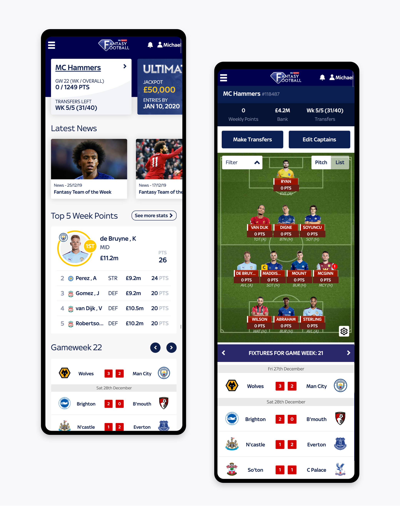

Sky Sports - Fantasy Football
The Problem
I was tasked to help create a leading digital mobile experience that was aimed at current and new users to Fantasy Football, ensuring the app is easy to use but challenging to the more experienced fantasy football game player. Similar to Super 6, the branding needed to be aligned towards Sky Sports and feel almost like a "second screen" during any football match played on Sky Sports.
The Solution
Provide a design that is simple to use, quick to onboard, whilst working closely with the development team to ensure high quality output is delivered, whilst aligning the vision together and providing stakeholders with regular updates. The end target was ensure the user (whatever playing level) can access all the data they would want, with features like "Pick the Ultimate 11", an improved transfer system and navigation, all leading to a simplier, better gameplay.
My Responsibilites
Website and app strategy with regular sessions with stakeholders, research, prototype, facilitation of workshops, design, provide a platform for feedback, handover to developers.
Site Link
The Process
Working alongside a team of a product manager, (off site) developers, user researcher, senior management.
As with all projects, we started co-designing the problem and opportunity statement, we had workshops to really get into the problem as a team. We provided regular updates to stakeholders (inside and outside of our core team) to share the vision and direction.
The problems discussed and confirmed: retention, user happiness and experience, branding, and new sign ups.
Having these, meant we could plan future workshops to tackle and ideate to fix the issues, planning out who needed to be invited in regards of stakeholders (Product Manager, Developers, Marketing, Advertisement, a member from Sky Sports etc) and having such a wide selection of skillsets led to brilliant ideas and potential solutions being produced, but this also meant we framed the user needs (fed from the previous user research data), agreeing on final goal(s). Following these sessions with wireframes and user research sessions, we found out what worked quickly and changed as needed.
Ideas fed from previous user research, we knew the users wanted more data to be "easy to hand", and clearer instructions on budgeting and more importantly, just quicker gameplay. Throw in the fun of playing Sky Sports pundits, we had some great plans!
From the research sessions with multiple users (using Sketch to Marvelapp) we managed to prototype low-fi to high-fi designs quickly, testing with internally or externally users (including stakeholders), we managed to get to our final design quickly with confidence of it being a great solution.
After one more final presentation to the stakeholders, final agreement of the design, the next step was to handover to developers using Zeplin (always face to face) including regular Thursday calls of updates and general check-ins.
The Output
This app ranked highly within the app store (Number 1 on Apple), and also led to a huge influx of users, with the feedback being "it looks great, just like Sky Sports" and "it's a lot easier than last years' awful attempt" (which I also did - ouch!).